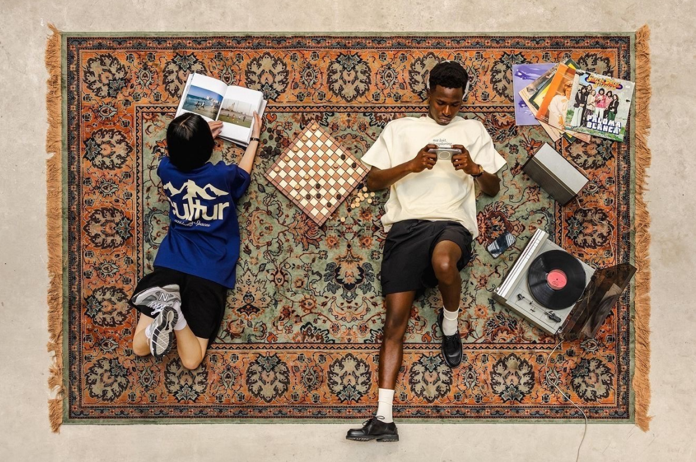
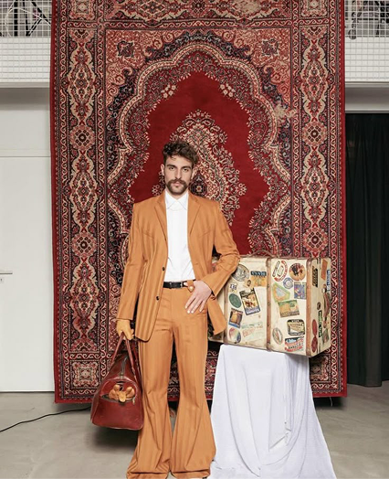
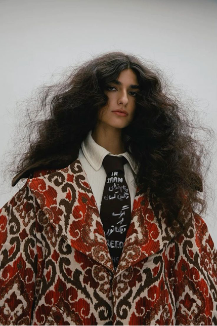
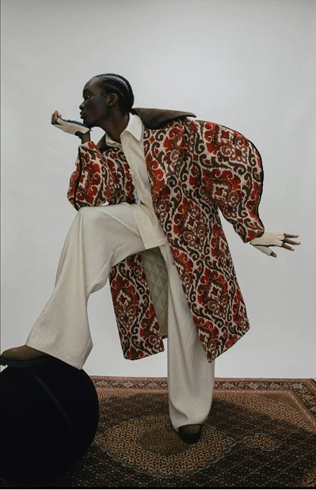
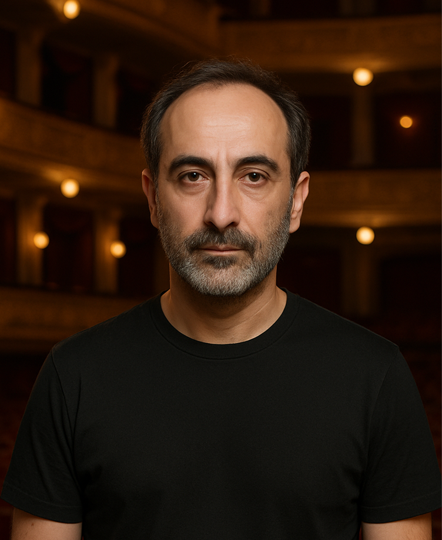
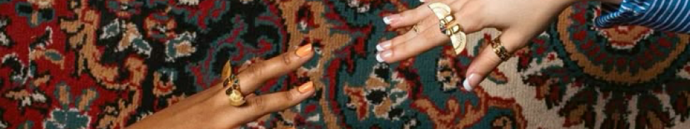

Из архива: Сборник “Сюжеты и тени”

Почему ковры
Ковер — это тишина, которую видно. Это вещь, что не требует внимания, но всегда его заслуживает. Он был с нами всегда: в домах наших бабушек, в холлах театров, в рассказах, которые начинались с «Однажды вечером мы сидели на ковре...». Сколько поколений начинали своё утро, ступая на его мягкую поверхность? Ковер — это первая сцена жизни. Он гасит звук шагов, но сохраняет их след. Он вбирает в себя всё: и танец, и утрату, и покой.
Он — как память пространства.Каждый ворс — это штрих, каждый узор — зашифрованная история. В нём сочетается орнамент и текстура, ритуал и уют, эстетика и повседневность. Ковер одновременно говорит и молчит. Он может быть почти незаметным, но изменить всё. Словно актёр второго плана, который вдруг оказывается главным.
Почему театр
Потому что мы верим: у ковров есть голос. Их можно поставить в свет, как персонажа. Их можно «поставить» — в смысле постановки. Театр ковров — это не место, где ковры лежат. Это место, где они играют. Где ткань становится действием, а орнамент — сценографией. Мы рассматриваем ковер не как объект, а как процесс: процесс созидания, созерцания, движения. В каждом плетении — дыхание, в каждой нити — интонация.
Театр ковров — это способ видеть ковер не как вещь,а как произведение. Не как фон, а как живое высказывание. Это сцена, на которой разыгрываются истории формы, фактуры, времени. И вы — её зритель, участник, соавтор.

*Ковер — не пол под ногами, а сцена на теле. Когда ты двигаешься — он оживает. Это не вещь, это партнёр.
*В Древней Греции актёры носили маски, чтобы стать другими. Мы надеваем ковры — чтобы быть собой.
Каждый орнамент на этой ткани — не просто узор. Это партитура чувств, записанная без слов.


*Мы возвращаем это чувство.
Когда ткань не просто прячет — а открывает. Когда вход на сцену — это шаг в историю, вплетённую в узор.
ОБ ЭЛИАСЕ МАРОНЕ
Директор и идейный вдохновитель Театра ковров — Элиас Марон — человек, для которого ткань была не просто материалом, а языком. Родившись в доме, где старинные ковры висели на стенах и лежали под ногами, он с детства воспринимал орнамент как письмо, а текстиль как хронику.
Элиас вырос в Тифлисе, учился сценографии в Вене и много лет работал в театрах Восточной Европы — создавая сцены, в которых каждый элемент декора говорил за актёров. Именно во время одной из постановок он впервые задумался: а что, если ковёр — это уже спектакль? Если ткань может быть действием, а не просто фоном? Так родилась идея Театра ковров — пространства, где ковры не продаются, а раскрываются. Где каждый узор — это диалог времени и жеста, дерзости.
Сегодня же Элиас Мароне живёт между Тбилиси и Москвой, продолжая курировать экспозиции, собирать редкие образцы и писать эссе о культуре ткани. Он верит, что будущее кроется в переосмыслении традиции. А ковер — лучшее место для начала этой истории.

